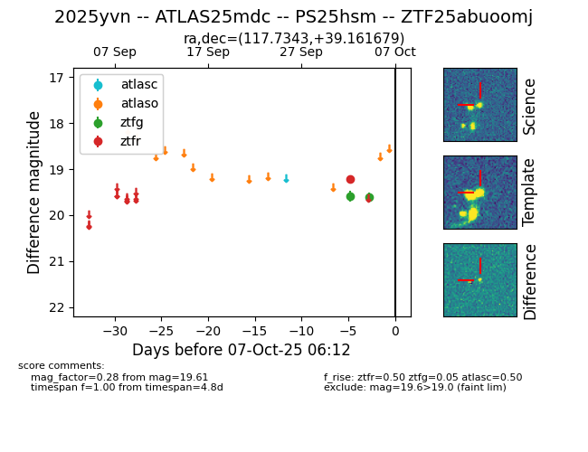
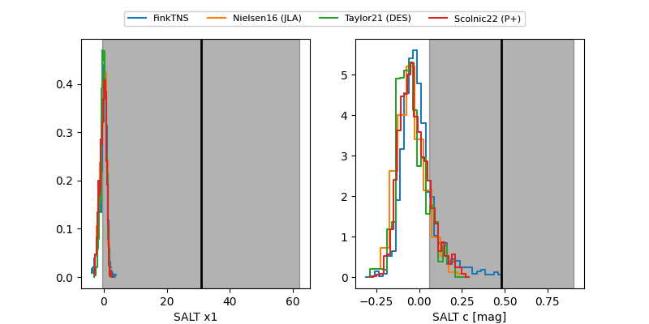

FINK: ZTF25abuoomj
Lasair: ZTF25abuoomj
ALeRCE: ZTF25abuoomj
TNS: 2025yvn
YSE: 2025yvn
ZTF25abuoomj (ztf,fink)
2025yvn (tns,yse)
ATLAS25mdc (atlas)
PS25hsm (panstarrs)
equatorial (ra, dec) = (117.7343,+39.16168)
galactic (l, b) = (180.7667,+27.71697)


last atlasc=nan, ztfg=19.61, ztfr=19.21
1 atlasc, 2 ztfg, 1 ztfr detections